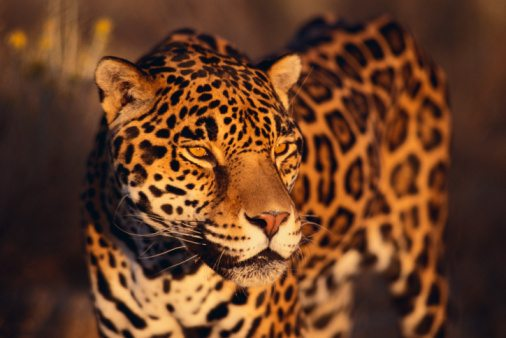

Jaguar

Unlike other big cats, Jaguars do not avoid water. They are actually alright at swimming. Their scientific name is Panthera Onca. It weighs 100 to 250lbs (45.3592kg to 113.398kg) and it's current population trend is decreasing.
Jaguars are South America's biggest big cats.They once lived from the southern tip of Argentina to the border of Mexico and the U.S.A..Most Jaguars are now found in the Amazon basin.